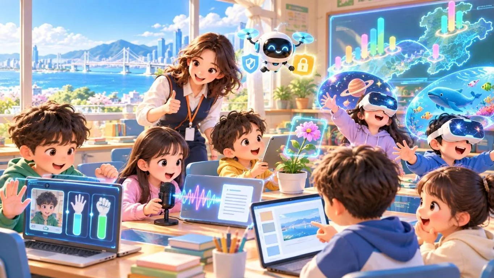
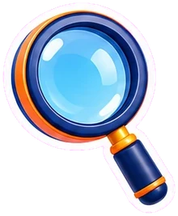
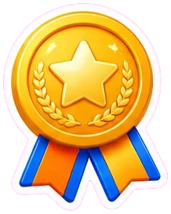
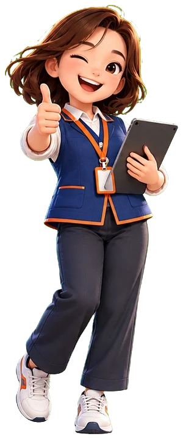

특화 10차시 · 고학년 지원 실습AI 사이트 실패 클리닉
나는 디지털 튜터 나래! AI 사이트 수업 중에 막혀 버린 5~6학년 친구들을 찾아가요. 대신 해 주는 ‘손잡기’에서, 스스로 해내는 ‘스스로 서기’로 이끌어 주세요.
오늘 클리닉에 접수된 친구 6명

접수막힌 친구를 골라요진료3번, 튜터의 한마디를 골라요

처방튜터 포인트를 챙겨요지원 단계 5가지 고를 때마다 어떤 지원인지 알려 줘요
오늘의 진료 접수 명단
친구 카드를 누르면 그 자리로 찾아가요. 상황마다 세 번, 튜터의 한마디를 골라요.
진료 완료 0 / 6명
 진료 전에 기억할 약속 (눌러서 펼치기)
진료 전에 기억할 약속 (눌러서 펼치기)
- 고학년 지원 — ‘손을 잡아 주는 지원’에서 ‘스스로 서도록’. 대신 눌러 주기보다 질문과 힌트, 해결한 학생은 친구에게 설명하게.
- 🛑 즉시 멈춤 — 광고·결제·가입 화면, 친구 얼굴 몰래 찍기, 외모 비하 같은 안전·개인정보 문제는 질문하지 말고 바로 멈춰요 → 이유 → 대안 → 담임 선생님께 공유.
- AI 사이트 단골 막힘 — 카메라·마이크 권한(주소창 왼쪽 아이콘), 탭 음소거·기기 볼륨, 영어 화면(그림·아이콘·위치 힌트), 광고 배너.
- 정답 없는 토론·생성형 AI — 모럴 머신은 이유 말하기와 결과 비교로, 생성형 AI의 실수는 ‘AI의 한계’ 이야기로.

진료 6명 완료!
💡나의 지원 스타일